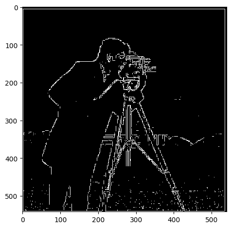
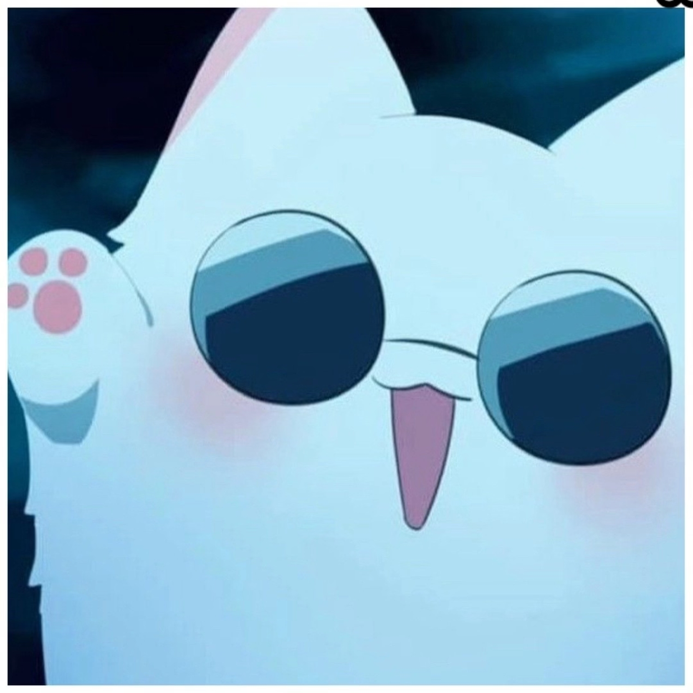

Dx

Dy
This project shows various ways to manipulate frequencies to exhibit interesting visual effects. The project will cover image sharpening, blurring, hybrid images and blends.

Using the provided finite difference operators we can achieve the D_x and D_y variants of the image through convolution
|
Dx |
Dy |
We can also find the magnitude through the previous two images, as well as find the edge image through binarization
The magnitude is found through calculating the pixel-wise distance of the partial derivatives calculated from the previous two images to demonstrate the change in image intensity is within the photo

Magnitude |

Binarized |
Prior to the process above, we first apply a Gaussian blur to the image to smoothen the edges and get rid of artifacts and noise as a result of jagged edges
Blurred
|
Dx |

Dy |
Finding magnitude and binarize is the same process as earlier
|
Magnitude |
Binarized |
The results of the non blurred variant leads to choppier and straight lines while the blurred version is smoother all around
We can sharpen an image by heightening the prominence of the image's high frequencies. We can find the high frequencies by subtracting the blurred image from the original effectively getting rid of all of the image's low frequencies
|
Blurred |
High Frequencies |

Original |
Sharpened |
I tried testing this function by initially blurring the image and inserting the blurred variant into the sharpener
|
Blurred |
Sharpened |
While parts of it appear more clear, it is not entirely sharp. I believe that this is due to a loss of information as a result of blurring the image. The process of sharpening it would not be able to clear the blurred lines and would only be able to emphasize their colors
Another example of sharpening
|
Original |
Sharpened |
A hybrid image is created by emphasizing one image as the lower frequencies and the other image as the higher frequencies
The process of isolating these frequencies is the same as outlined in the previous section

Image 1 |

Image 2 |
Hybrid image
|
Image 1 |

Image 2 |
Hybrid image
|
Low Frequency 1 |
Low Frequency 2 |
|
High Frequency |
Hybrid |
|
Image 1 |
Image 2 |
Hybrid image
I believe this is a result of the various empty spaces within each image. There are expansive areas of singular colors making the hybrid stand out less since there are less noisy areas. The alignment elements are also not the most connectable
In a Gaussian stack, we apply an increasingly higher sigma to the Gaussian kernel in order to blur the image further without subsampling
In a Laplacian stack, we subtract the following Gaussian stack level from the current level to find the changes between them
Gaussian & Laplacian stack of an apple: (4 Levels)

Gaussian |
|||
|
Laplacian |

|

|
In order to blend images together seemingly seamlessly, we need to introduce a mask that will cover the area that will be blended from one picture into the other. By blurring all of the images and applying the Gaussian and Laplacian stacks we edges will appear smoother and make the blending less abrupt
We introduce the mask for the oraple
The blending process follows:

|
||
This blending process also works with irregular masks (nonlinear) following the same logic

Mask |
Blending process:

|
||
The oraple example works especially well since the background of the original images are mostly similar making the blending seem more regular. Forcing distinctly difference backgrounds or images may seem increasingly more difficult
|  |
Mask |
Result: